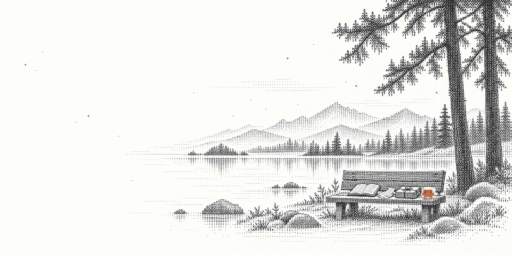

01 CONFIGURATION
调整外发配置
选择“保持功能”“减少外发”或逐项自定义。先看当前设置、来源与准确 diff，批准后写入，再读回核对。
配置读回与实际运行效果分别核对；本地代理只覆盖经过它的连接。
把 Claude Code 的环境与工作收好。
Lintel 是一个本地 Claude Code 环境工具。调整设置、保全指令与会话、准备下一段工作：先看清范围与变化，再由你批准执行。提供 macOS App 与独立 CLI，也能通过 SSH 管理指定主机上的环境，不默认上传。
0.1.0 Preview · 无正式下载 · 源码开发预览 / macOS App · 独立 CLI
CAPABILITIES / SIX WAYS TO BEGIN
01 CONFIGURATION
选择“保持功能”“减少外发”或逐项自定义。先看当前设置、来源与准确 diff，批准后写入，再读回核对。
配置读回与实际运行效果分别核对；本地代理只覆盖经过它的连接。
02 PORTABLE WORK
按具体原件选择指令、记忆与会话，生成加密工作包。脱离原任务仍可独立阅读、整理交接稿；迁入另行预览批准。
保留原始字节，不复制凭据；阅读资料不代表原生续聊已验收。
03 A FRESH ENVIRONMENT
为修复本地登录、清理并重建或退役选择准确范围。先保全工作，再按批准的顺序处理已识别的本地状态。
官方注销有独立条件；本地文件处理不等于服务端账号撤销。
04 BROWSER COMPANION
在选定 profile 中加载伴随扩展、配对本地连接，管理有限的站点规则。清理先隔离准备，完整重启浏览器后再次确认删除。
扩展仍需开发加载；正式浏览器尚未验收，删除的数据不可恢复。
05 ACROSS SSH
连接已有 SSH alias，由目标主机的 runner 执行同一套环境任务。断线或 App 重开后，沿用原任务 ID 核对结果。
生产 VPS 仍需独立验收；不承诺主机重启后继续执行。
06 RECEIPTS & RECOVERY
查看原任务完成的步骤、错误和待核对项。配置按字段恢复，服务另行预览恢复；后续编辑会被核对和保留。
恢复也需要批准；不是所有操作都能撤销，删除没有通用恢复。
A LITTLE ROOM TO KEEP GOING
环境会换。
你做过的工作，应该留下。

01 KEEP WHAT MATTERS
指令、记忆、会话。
那些一点点做出来的东西，值得好好带走。
选中具体原件，核对范围，保全成可移交的加密工作包。原始字节留下，未选的资料留在原处。
I / AT THE WATER'S EDGE
01 / INSTRUCTIONS
Synthetic instruction only.
02 / MEMORY
Synthetic memory only.
03 / SESSION
{"type":"synthetic","message":"hello"}这是三份合成原件的阅读示例，不读取你的电脑。App 可独立阅读工作包、整理交接稿；迁入另行预览批准，阅读本身不承诺续聊。
02 KNOW WHAT CHANGES
改哪里，留什么，接下来会发生什么。
在动手之前，都应该说清楚。
Lintel 先给出具体变化，由你批准，再执行同一份计划。配置目录与项目工作目录分开，来源和目标都能核对。
II / BEFORE THE CROSSING
HOW IT WORKS / YOUR PLAN, YOUR CALL
以“只保全，不清理”为例。
选三份合成原件，收好一份加密工作包；每一步都能回到原任务核对。
CLAUDE.md + MEMORY.md + session.jsonl
原件保留 加密工作包
轻点一步，看工作怎样被收好。
合成流程演示 · 不执行操作选主机、配置环境和具体原件。先浏览清单与容量，明确这一次要收好哪些工作。
范围由你选核对原件范围、加密包的落点和会保留的内容。查看本身不更改源原件；计划有自己的 ID。
变化看得见批准这一份计划后才执行，执行前复查选中来源。条件变化会停下，需重新预览和批准。
同一份计划回执区分已接收与已完成。断开后按原 ID 查询，不重新提交；工作包可脱离原任务独立阅读。
结果有来路收好之后，可以阅读原件或整理交接稿。
迁入与启动，各有自己的步骤和批准。
配置目录与项目工作目录分开选择。
阅读资料与真实认证、原生续聊分别验收。
ONE CORE / CLEAR BOUNDARIES
浏览器扩展与本地连接是独立的有限入口。这个官网只展示产品，不读取你的环境，也不执行上述操作。
03 PICK UP THE THREAD
工作有它的原件，操作有它的回执。
每一步的决定，始终留在你这里。
LINTEL / 0.1.0 PREVIEW
从一次合成试用开始。
认识 Lintel，再决定把它带进你的工作。
源码开发预览，目前没有正式 Release 或签名／公证下载。真实认证／native 续聊、正式浏览器与生产远端仍有未验收项。浏览器和代理有各自的边界；改配置不等于拦住全部流量，重建本地环境不等于改变服务端账号状态。原创材料的通用复用许可待选定。
网站只展示产品，不连接执行核心。无默认上传、账号或追踪器；主题与游戏最高分只留在本机。
A SMALL DETOUR
陪 Clawd 跳一小段。按下开始，再出发。